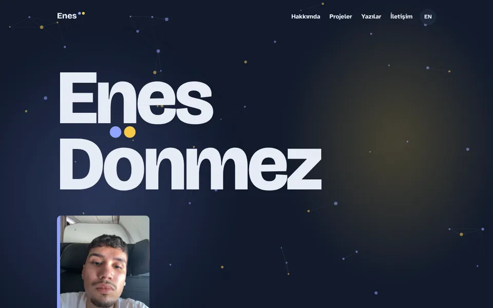

Web sitesi · 2026
Kişisel Web Sitesi

Şu an incelediğiniz site. Hazır bir site kurucusu yerine, içeriği Markdown dosyalarından HTML sayfalarına çeviren küçük bir Python programıyla hazırlandı ve GitHub Pages üzerinde yayınlanıyor.
Öne çıkanlar
- İki dil: Türkçe ve İngilizce; her sayfa diğer dildeki karşılığına bağlı.
- Erişilebilirlik: Okunabilirlik için tasarlanmış Atkinson Hyperlegible yazı tipi, yüksek renk kontrastı, klavyeyle gezinme ve “içeriğe geç” bağlantısı. Hareket azaltma ayarı açık olan ziyaretçilerde arka plan animasyonu durur.
- Hız: Çerçeve (framework) kullanılmadı; sayfalar sunucuda hazır HTML olarak üretilir. Google Lighthouse ölçümünde performans, erişilebilirlik, en iyi uygulamalar ve SEO puanlarının tamamı 100.
- Arama motorları: Site haritası, canonical bağlantılar, Open Graph önizlemeleri ve schema.org verisi.
- Mobil uyumlu tasarım ve indirilebilir CV.
Kullanılan teknolojiler
Python, Jinja2, Markdown, HTML, CSS, JavaScript, GitHub Pages.